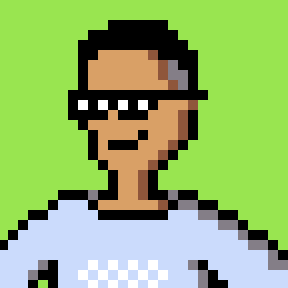

Fresh Graduate Universitas Jenderal Soedirman program studi Informatika yang berfokus pada pemrograman dengan spesialisasi dalam pengembangan backend. Memiliki kemampuan dalam merancang dan pengelolaan basis data, serta pembuatan API yang efisien dan aman. Memiliki minat dalam bidang pengembangan game dan data science. Aktif mengembangkan berbagai proyek sederhana sebagai sarana eksplorasi dan peningkatan keterampilan teknis, serta memiliki kemampuan problem solving yang baik dalam menyelesaikan tantangan logika.
Backend API untuk aplikasi Qumon, dibangun dengan Laravel. Konsep aplikasinya seperti TikTok, tapi untuk kuis pengetahuan.
Backend untuk aplikasi klinik kesehatan — mencakup tracking kesehatan, rekam medis, hingga transaksi pembayaran.
Backend untuk platform layanan tes lab klinik — mulai dari pemesanan tes, pembayaran, pengelolaan kit sampel, hingga analisis hasil tes berbasis AI.
Aplikasi kuis interaktif "Queasy", dikembangkan bersama tim sebagai backend developer. Sudah memiliki HAKI sejak 2025.
Game riset untuk membandingkan performa algoritma pathfinding A* dan A* dengan Jump Point Search.
Game edukasi untuk melatih kemampuan matematika lewat pendekatan berbasis tantangan.
Game RPG dungeon crawling single-player untuk tuna netra, dengan sistem pertarungan berbasis giliran dan interaksi audio.
Simulasi pertandingan futsal 5v5 dengan fisika dan AI sederhana, otomatis dirender jadi video vertikal siap unggah ke TikTok/Reels.